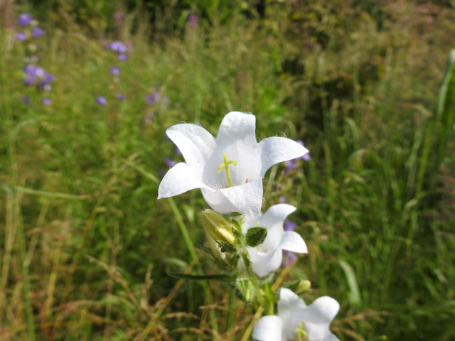

В Битцевском лесу, несмотря на его окружённость густонаселенными жилыми
кварталами и высокую посещаемость, сохранились редкие или особо
декоративные виды травянистых растений: ландыш майский, хохлатки,
незабудка лесная, колокольчики персиколистный, широколистный и
крапиволистный. Всего в этом насаждении отмечен 41 вид травянистых
растений. Сам покров густой и сравнительно равномерный, а его структуру
и облик определяет осока волосистая или обычная трава. Кроме
перечисленных выше растений, следующие виды нуждаются в охране как
довольно редкие для Москвы или особо декоративные: костер Бенекена,
майник двулистный, купена многоцветковая, первоцвет весенний, гоницвет
кукушкин, воронец колосистый, земляника зеленоватая, бутень ароматный,
медуница, незабудка болотная, купавка красильная, сочевичник весенний.
|  |